Recognition
External recognition, features and invitations
Selections, invitations, features and public engagement, with my role in each.
In pictures
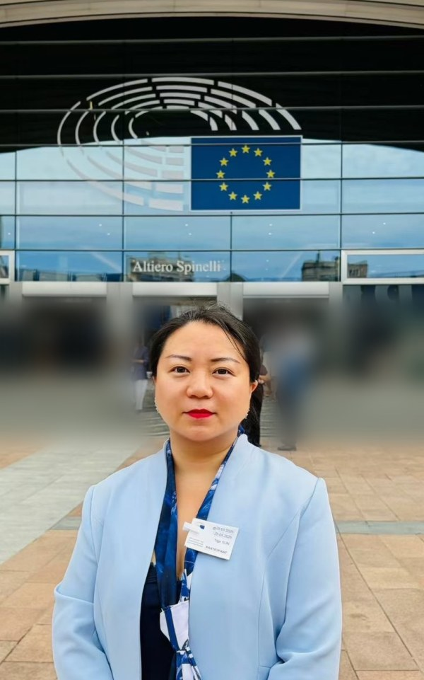
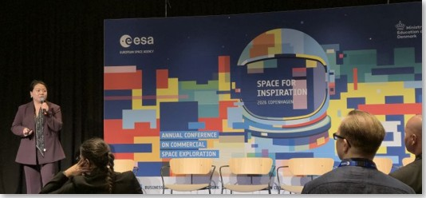
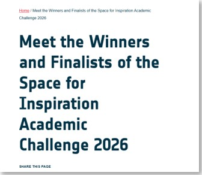
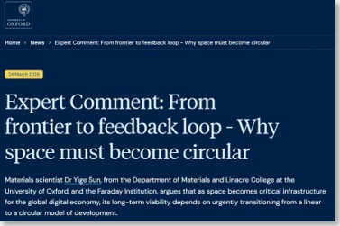
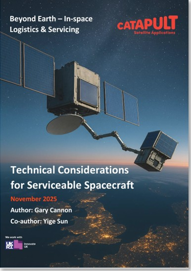
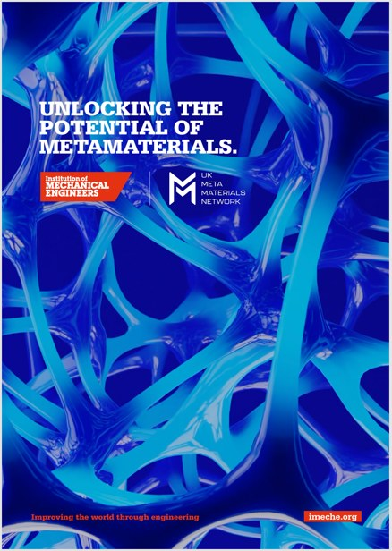
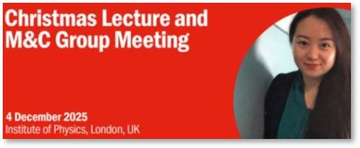
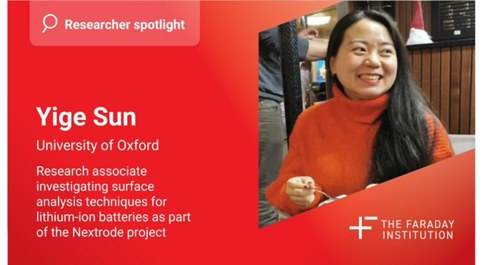
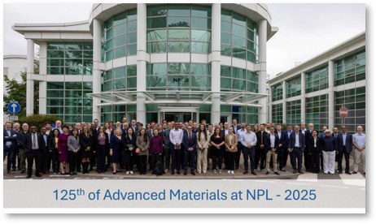
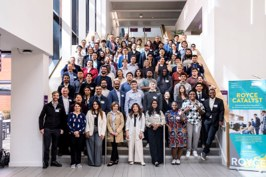
Features and interviews
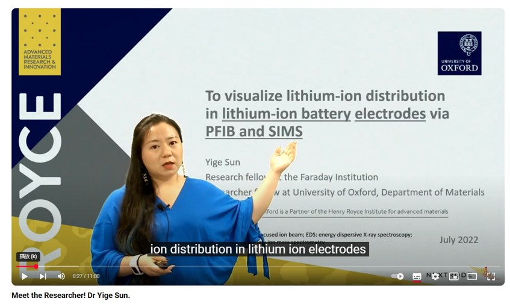
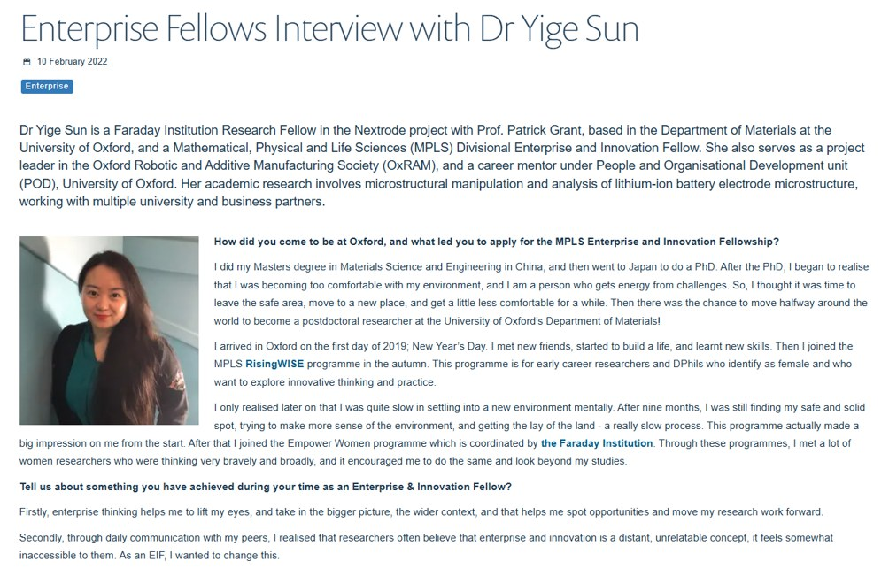
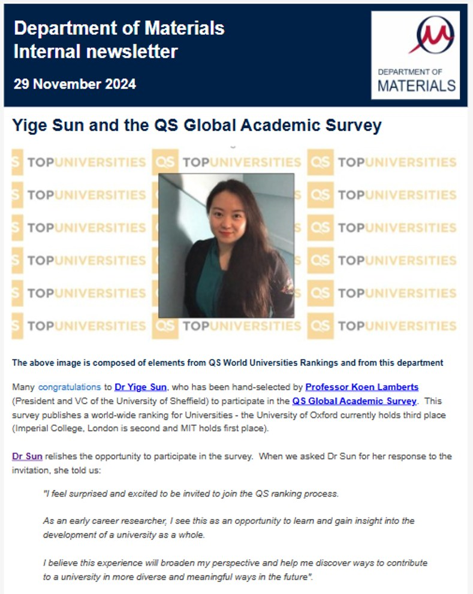
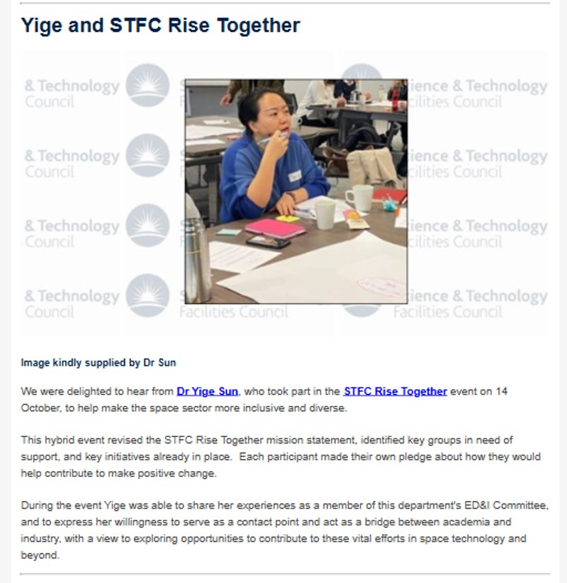
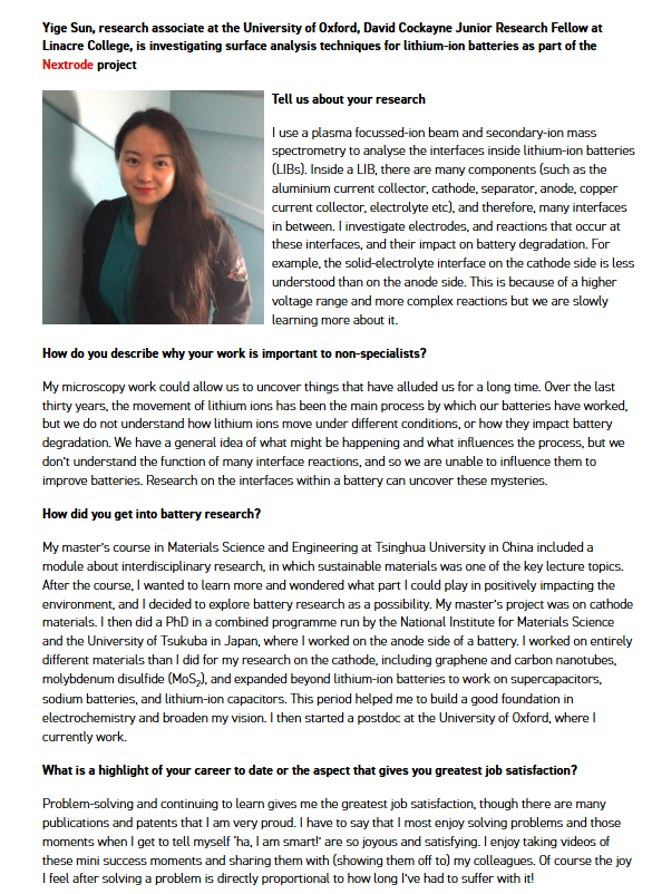
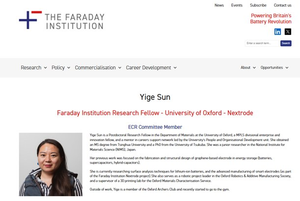
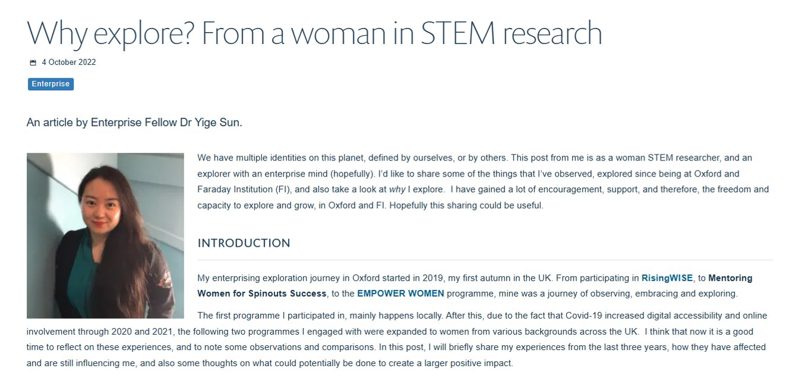
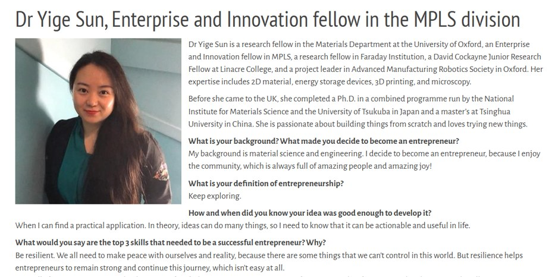
Selected, shortlisted and invited
| Date | Item | Role |
|---|---|---|
| 2026 | ESA Space for Inspiration Academic Challenges, shortlisted as one of the top three, advanced materials and in-space manufacturing | Shortlisted (top three), project lead |
| 2026 | UKSA NSIP Call 3, AI-Driven Designing for Disassembly: shortlisted as one of three Oxford submissions | Principal investigator |
| 2026 | ESA Strategy Forum on Space-Based Data Centres, ESTEC | Selected participant |
| 2026 | European Commission JRC and European Parliament High-Level Conference on Raw Materials and Sustainable Competitiveness | Invited participant |
| 2026 | UKRI Advanced Manufacturing Programme roundtable on circularity and design (August) | Invited participant |
| 2026 | UKSA Accelerator: LEO entrepreneurial programme, interview stage; Henry Royce Catalyst programme | Selected participant |
| 2026 | Faraday Institution Community Awards review panel, invitation reported by Linacre College | Panel member |
| 2026 | Longitude Prize team (Nesta and Challenge Works) exploring circular space batteries as a potential national prize challenge | Programme lead |
| 2025 | Royal Society University Research Fellowship, shortlisted; EPSRC Open Fellowship, invited to Stage 2; RAEng Green Future Fellowship, shortlisted by Imperial College and submitted | Applicant |
| 2025 | EPSRC-Defra Circular Economy Workshop (June) | Selected contributor |
| 2025 | Nominated, Public and Community Engagement with Research scheme, University of Oxford | Nominee |
| 2024 | QS Global Academic Survey, hand-selected by the President and Vice-Chancellor of the University of Sheffield to participate | Selected participant |
| 2024 | STFC Rise Together event (14 October): contribution to inclusion and diversity in the space sector, as a member of the department's ED&I Committee | Participant |
| 2021 to present | Faraday Institution Early Career Researcher Committee | Member |
Featured, interviewed and published
| Date | Item | Role |
|---|---|---|
| 2026 | Oxford Expert Comment: From frontier to feedback loop, why space must become circular | Author |
| 2026 | OPEN Annual Report 2025 to 2026: Circular Batteries in Space workshop featured with a quote | Featured |
| 2026 | Circular Batteries in Space workshop, recap video | Lead organiser |
| 2025 | Technical Considerations for Serviceable Spacecraft, Satellite Applications Catapult; IMechE Unlocking the Potential of Metamaterials | Co-author |
| 2023 | Faraday Institution Researcher Spotlight, one of the inspiring women in the Faraday Institution | Featured |
| 2022 | blog on career development for women in STEM research, MPLS Enterprise and Innovation Fellows | Author |
| 2022 | Royce Institute public engagement with research video, Meet the Researcher series | Featured |
| 2022 | Enterprise Fellows Interview, MPLS Division, University of Oxford | Interviewee |
Further interviews and coverage will be added to this list as they are confirmed.
Invited talks and lectures
| Date | Item | Role |
|---|---|---|
| 2026 | 3 Minute Wonder science communication competition, LSE branch heat | Competitor |
| 2025 | Christmas Lecture, Institute of Physics (December) | Invited speaker |
| 2025 | 247th ECS Meeting, Montreal: ethical frontiers in the international battery industry, with the Faculty of Philosophy | Invited presentation |
| 2024 | Institute of Physics lecture: Is the battery really THAT powerful? | Invited speaker |
| 2024 | NASA Aerospace Battery Workshop; UNIQ summer school lecture, Department of Materials | Participant; invited lecturer |
| 2023 | Invited talks at NIMS and AIST (Japan), the National Physical Laboratory and the University of Birmingham | Invited speaker |
| 2023 | Soapbox Science London, more than 750 visitors; also in 2022 | Invited speaker |
| 2022 | Invited talks at the Henry Royce Institute, Oxford and Manchester | Invited speaker |
Community and inclusion
- Oxford Inspiring Women and Faraday Institution Inspiring Women activities; blog on women in STEM research.
- Contributor to the University EDI office's annual gender report; Oxford Women's Staff Society steering committee; Linacre Welfare and Equality Committee; departmental EDI committee.
- Organiser of the Faraday Institution Early Career Researcher conference (2022, 2024, 2026), about 300 researchers; judging panels at the Faraday Institution Conference (2021 to 2023).
- 19 public engagement activities since 2021.